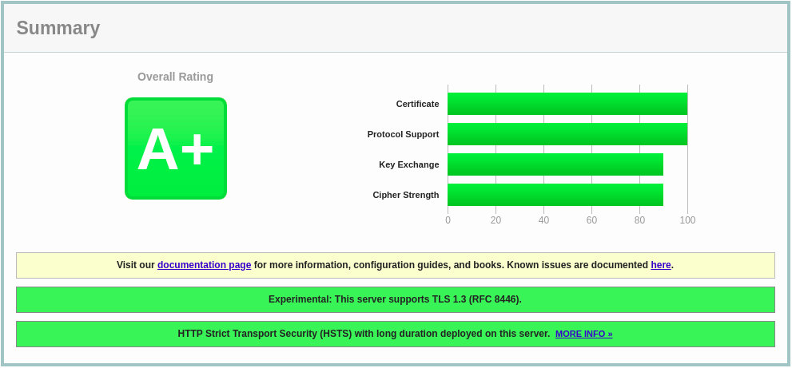

在 CentOS 8 上使用 Let's Encrypt 为 nginx 配置 SSL
在本教程中，我们将在用 Nginx 作为 Web 服务器的 CentOS 8 上安装免费的 Let's Encrypt SSL 证书的分步说明。我们还将展示如何配置 Nginx 以使用 SSL 证书并启用 HTTP/2 。
Let's Encrypt 是由 Internet 安全研究组 (ISRG) 开发的免费，自动化和开放的证书颁发机构，它提供免费的 SSL 证书。
Let's Encrypt 颁发的证书受到所有主要浏览器的信任，并且自颁发之日起有效期为 90 天。
先决条件
在继续之前，请确保您满足以下先决条件：
安装 Certbot
Certbot 是一个免费的命令行工具，它简化了从服务器获取和续订 Let's Encrypt SSL 证书并自动启用 HTTPS 的过程。
certbot 软件包不包含在标准 CentOS 8 存储库中，但可以从供应商的网站上下载。
以 root 或 sudo 用户身份运行以下 wget 命令，将 certbot 脚本下载到该 /usr/local/bin 目录：
sudo wget -P /usr/local/bin https://dl.eff.org/certbot-auto
下载完成后，授权使文件可执行：
sudo chmod +x /usr/local/bin/certbot-auto
产生强 Dh(Diffie-Hellman) 组
Diffie-Hellman 密钥交换 (DH) 是一种在不安全的通信通道上安全地交换加密密钥的方法。
通过键入以下命令来生成一组新的 2048 位 DH 参数：
sudo openssl dhparam -out /etc/ssl/certs/dhparam.pem 2048
如果需要，可以将密钥长度最多更改为 4096 位，但是生成时间可能会超过 30 分钟，具体取决于系统的配置。
获取 “Let's EncryptSSL” 证书
为了获得域的 SSL 证书，我们将使用 Webroot 插件，该插件通过创建用于验证 $ { webroot-path } /.well-known/acme-challenge 目录中请求的域的临时文件来工作。 Let's Encrypt 服务器向临时文件发出 HTTP 请求，以验证请求的域是否解析为 certbot 运行的服务器。
为了更简单，我们将对 .well-known/acme-challenge 所有 HTTP 请求映射都到一个目录 /var/lib/letsencrypt 。
以下命令将创建目录，并使该目录可用于 Nginx 服务器。
sudo mkdir -p /var/lib/letsencrypt/.well-known
sudo chgrp nginx /var/lib/letsencrypt
sudo chmod g+s /var/lib/letsencrypt
为了避免重复代码，请创建以下两个片段，这些片段将包含在所有 Nginx 服务器块文件中：
sudo mkdir /etc/nginx/snippets
文件: etc/nginx/snippets/letsencrypt.conf
location ^~ /.well-known/acme-challenge/ {
allow all;
root /var/lib/letsencrypt/;
default_type "text/plain";
try_files $uri =404;
}
文件: /etc/nginx/snippets/ssl.conf
ssl_dhparam /etc/ssl/certs/dhparam.pem;
ssl_session_timeout 1d;
ssl_session_cache shared:SSL:10m;
ssl_session_tickets off;
ssl_protocols TLSv1.2 TLSv1.3;
ssl_ciphers ECDHE-ECDSA-AES128-GCM-SHA256:ECDHE-RSA-AES128-GCM-SHA256:ECDHE-ECDSA-AES256-GCM-SHA384:ECDHE-RSA-AES256-GCM-SHA384:ECDHE-ECDSA-CHACHA20-POLY1305:ECDHE-RSA-CHACHA20-POLY1305:DHE-RSA-AES128-GCM-SHA256:DHE-RSA-AES256-GCM-SHA384;
ssl_prefer_server_ciphers off;
ssl_stapling on;
ssl_stapling_verify on;
resolver 8.8.8.8 8.8.4.4 valid=300s;
resolver_timeout 30s;
add_header Strict-Transport-Security "max-age=63072000" always;
add_header X-Frame-Options SAMEORIGIN;
add_header X-Content-Type-Options nosniff;
上面的代码片段包括 Mozilla 推荐的配置，可启用 OCSP 装订， HTTP 严格传输安全性 (HSTS) ，并仅执行少量针对安全性的 HTTP 标头。
创建 letsencrypt.conf 代码段后，打开域服务器块并包含代码段，如下所示：
文件: /etc/nginx/conf.d/example.com.conf
server {
listen 80;
server_name example.com www.example.com;
include snippets/letsencrypt.conf;
}
重新加载 Nginx 配置以使更改生效：
sudo systemctl reload nginx
使用 webroot 插件运行 certbot 工具，以获取您域的 SSL 证书文件：
sudo /usr/local/bin/certbot-auto certonly --agree-tos --email admin@example.com --webroot -w /var/lib/letsencrypt/ -d example.com -d www.example.com
如果这是您第一次调用 certbot ，该工具将安装缺少的依赖项。
成功获得 SSL 证书后， certbot 将打印以下消息：
IMPORTANT NOTES:
- Congratulations! Your certificate and chain have been saved at:
/etc/letsencrypt/live/example.com/fullchain.pem
Your key file has been saved at:
/etc/letsencrypt/live/example.com/privkey.pem
Your cert will expire on 2020-03-12\. To obtain a new or tweaked
version of this certificate in the future, simply run certbot-auto
again. To non-interactively renew *all* of your certificates, run
"certbot-auto renew"
- If you like Certbot, please consider supporting our work by:
Donating to ISRG/Let's Encrypt: https://letsencrypt.org/donate
Donating to EFF: https://eff.org/donate-le
现在已经有了证书文件，您可以按以下方式编辑域服务器块：
文件: /etc/nginx/conf.d/example.com.conf
server {
listen 80;
server_name www.example.com example.com;
include snippets/letsencrypt.conf;
return 301 https://$host$request_uri;
}
server {
listen 443 ssl http2;
server_name www.example.com;
ssl_certificate /etc/letsencrypt/live/example.com/fullchain.pem;
ssl_certificate_key /etc/letsencrypt/live/example.com/privkey.pem;
ssl_trusted_certificate /etc/letsencrypt/live/example.com/chain.pem;
include snippets/ssl.conf;
include snippets/letsencrypt.conf;
return 301 https://example.com$request_uri;
}
server {
listen 443 ssl http2;
server_name example.com;
ssl_certificate /etc/letsencrypt/live/example.com/fullchain.pem;
ssl_certificate_key /etc/letsencrypt/live/example.com/privkey.pem;
ssl_trusted_certificate /etc/letsencrypt/live/example.com/chain.pem;
include snippets/ssl.conf;
include snippets/letsencrypt.conf;
# . . . other code
}
通过上述配置，我们将强制使用 HTTPS 并将 www 重定向到非 www 版本。
最后，重新加载 Nginx 服务以使更改生效：
sudo systemctl reload nginx
现在，使用打开您的网站 https:// ，您会注意到一个绿色的锁定图标。
如果您使用 SSL Labs 服务器测试来测试您的域，则会获得一个 A+ 成绩，如下图所示：

自动更新 Let's EncryptSSL 证书
Let's Encrypt 的证书有效期为 90 天。要在证书过期之前自动更新证书，请创建一个 cronjob，每天运行两次的，并在过期前 30 天自动更新证书。
使用 crontab 命令创建一个新的 cronjob ：
sudo crontab -e
粘贴以下行：
0 */12 * * * root test -x /usr/local/bin/certbot-auto -a \! -d /run/systemd/system && perl -e 'sleep int(rand(3600))' && /usr/local/bin/certbot-auto -q renew --renew-hook "systemctl reload nginx"
保存并关闭文件。
要测试续订过程，可以使用 certbot 命令，后跟 --dry-run 开关：
sudo certbot renew --dry-run
如果没有错误，则表示测试更新过程已成功。
结论
在本教程中，我们向您展示了如何使用 Let's Encrypt 客户端 certbot 为您的域下载 SSL 证书。我们还创建了 Nginx 代码段以避免重复的代码，并将 Nginx 配置为使用证书。在本教程的最后，我们设置了一个 cronjob 来自动更新证书。
要了解有关 Certbot 的更多信息，请访问其文档页面。